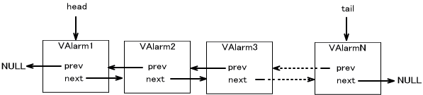
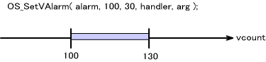
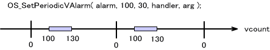
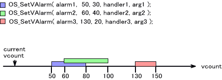
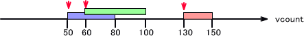
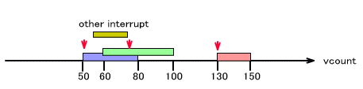
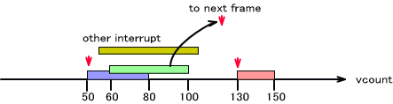
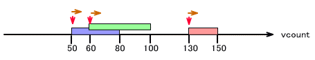
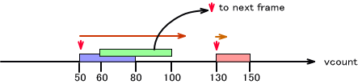

The V count alarm allows you to set calls to specified handlers at arbitrary V counts, done using the value of the V count register (which holds the LCD's scanning status) and V counter match interrupt. Its mechanism is completely different from the alarm that uses ticks (which uses an internal hardware timer).
To use the V count alarm system, begin by calling OS_InitVAlarm()
You can use OS_IsVAlarmAvailable() to check whether or not the V count alarm system is available.
Call OS_EndVAlarm() to terminate the V count alarm system.
To set up a V count alarm, prepare an OSVAlarm structure object. You can set up one V count alarm for each of these objects. Initialize the object using OS_CreateVAlarm()
The V count alarm is configured using OS_SetVAlarm(). To set a periodic V count alarm to be called by the handler, use OS_SetPeriodicVAlarm().
To cancel a V count alarm, call OS_CancelVAlarm(). This function cancels the specified V count alarm.
The OS_CancelAllVAlarms function cancels all V count alarms.
Another method (described below) uses tag values to cancel groups of alarms.
You can give V count alarms a tag value in the range of 1-255. This is used to cancel all V count alarms that have the specified tag value.
OS_SetVAlarmTag() sets tag values for V count alarms that have already been set.
To cancel all alarms with a given tag value, use OS_CancelVAlarms()
The V count alarm structure OSVAlarm is linked in a list in the order that V count alarms are generated.
If a given alarm structure is still connected to the list, that means its alarm has not yet gone off. Do not use this structure to set another alarm, because that will corrupt the link structure. If a structural corruption is detected, OS_Panic stops the library, regardless of the build.

Using OS_CreateAlarm() to initialize an alarm structure that is still connected to the list is also prohibited, since this can corrupt the link structure and cause unstable behavior.
The V count alarm is configured using OS_SetVAlarm(). These settings specify the V count timing with which you want to call the specified handler and the V count difference, which defines the tolerated delay range. This specifies how much time can pass before calling the V count alarm handler when the handler cannot be called at the specified timing because of some other interrupt process or a system stall.
If you want to call the handler with the specifically specified timing, this delay tolerance value should be set to 0. Setting the value to OS_VALARM_DELAY_MAX means the V count alarm can be generated at any time at or after the specified time. Set the delay somewhere between these two values.
In the command shown below, the alarm is set with V count = 100 and delay = 30. The system will try to call the handler at V count = 100, but if it cannot do it at that time, it will make the call whenever possible up to V count = 130.

The V count alarm is also available as a periodic alarm. In such cases, a V count alarm is generated at the specified V count in every frame. The settings are configured using OS_SetPeriodicVAlarm().

It is all right to configure a number of V count alarms with the same V count timing, and it is all right for the timing and delay ranges to overlap.
The example below shows three V count alarms.

As long as the processing burden does not interfere with the alarms, the individual alarm handlers get called with the specified timing (V count = 50, = 60, = 130). In the figure below, the V count alarms are generated at the places indicated by the red downward arrows.

If an interrupt is inserted after the first V count alarm and the process must deal with a slight prolongation past the timing of the second V count alarm, that second V count alarm will be generated within the delay range if possible, as shown below.

If the process is further drawn out and the V count alarm cannot be generated within the delay range, that V count alarm comes up in the next frame. (If this V count alarm is a periodic alarm, the process in that frame is not carried out.)

This situation, where the V count alarm is postponed until the next frame, can arise for other than outside factors, such as when the handler process itself is too much of a load. In the figure below, the orange arrows pointing to the right ( —> ) show the course of the alarm handler process. In this example, each handler process ends in a short time and does not affect another V count alarm.

In the next example, in contrast, the process for the first V count alarm is extremely heavy and extends beyond the delay range for the second V count alarm. As a result, this second V count alarm shows up in the next frame.

We recommend that your processes generally end the interrupt handler quickly.
During MP communications, V-blank synchronization between parent and child can cause the V-counter register value to vary over the range of 202 to 210. Change always involves the value being set to something smaller than its original value. (For example, the value 208 is changed to a smaller value 205.) Take note of this if you are going to set a V count alarm in this range.
OS Function List (V counter alarm)
2007/10/16 Standardized terminology, changing "wireless synchronization" to "MP communications V-blank synchronization."
2005/03/08 Standardized terminology in Japanese text for "interrupt."
2004/12/13 Corrected terms and suffixes.
2004/11/24 Added text about vcount changes due to wireless synchronization.
2004/10/25 Initial version (Separated from OS_InitVAlarm()).
CONFIDENTIAL